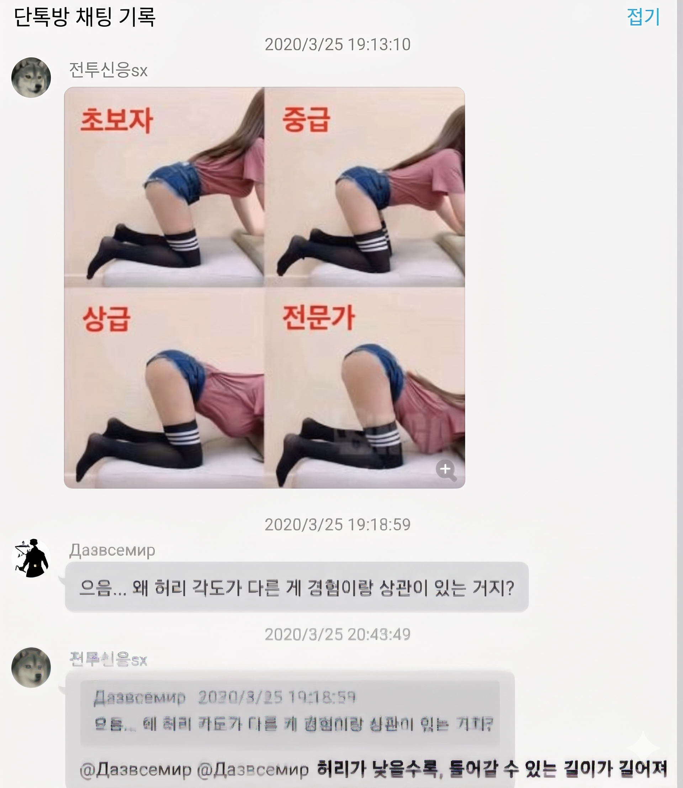
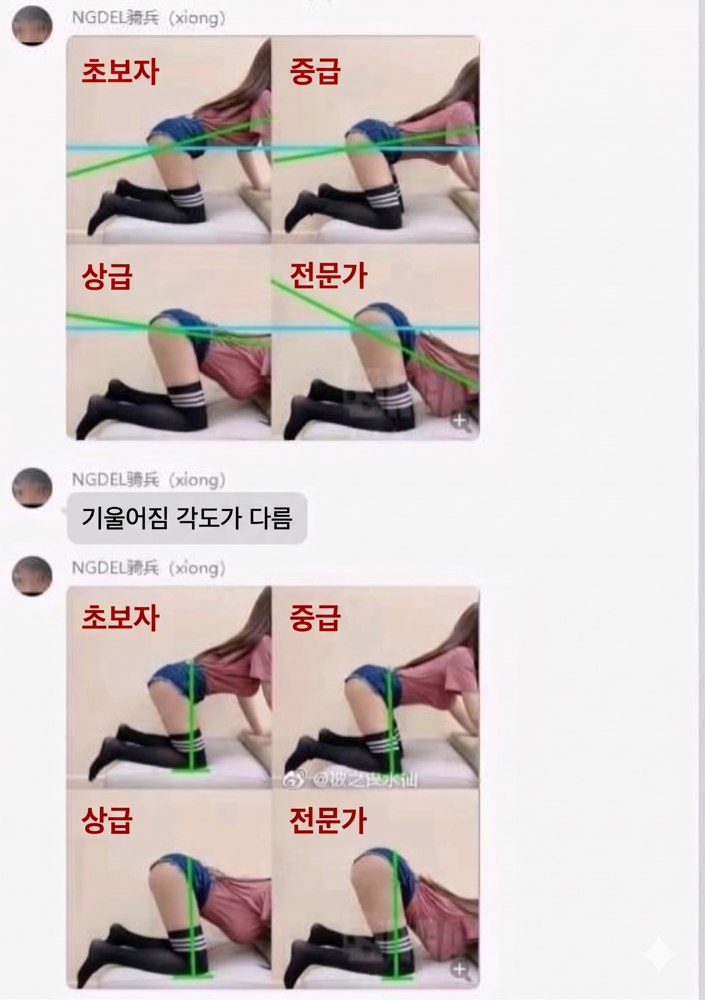
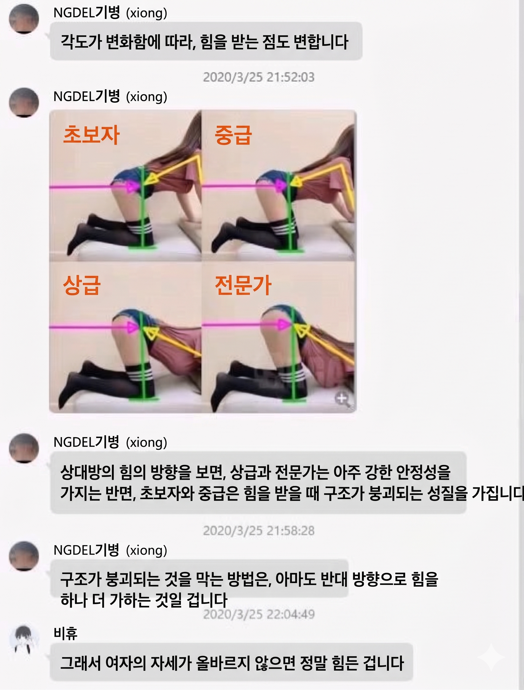

역시 대륙의 지식이란



역시 대륙의 지식이란
필요없는 지식
안타깝군
박는쪽이 좋은거지?
넌 박히는 쪽이 좋단말이냐?
정역학을 배우는이유
초식을 배우는 이유
역시 인구가 많은 이유가 있었어
부진장강곤곤래
크아악 내 머리속에서 나가 역학!!!!!!
전문가로 될 수록 더 꼴림
근데 저렇게 내려가면 오히려 갠적으로 더 별로던데
하자지니?
먼소리임 아래로 휘어있어야 오히려 저 자세가 편한거 아님?
아다거나 섹스 쥰나 못탐
성역학이냐
구조기술사 등판하나?
왜 꼴리는지 과학적으로 증명하다니 멋지군
젠장 트러스 구조 내 머리 속에서 나가
초중급은 남녀 힘의 차이가 크거나 박자가 안맞으면 앞으로 쏟아질 수 있음
어디를 가느냐에 따라 다르지